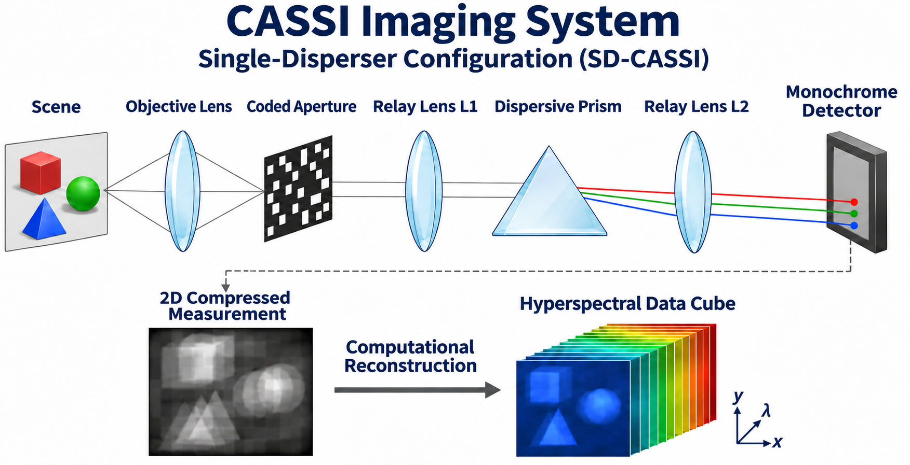

Whole-body 18F-FDG PET reveals glycemic state-dependent reorganization of directed inter-organ metabolic networks
European Journal of Nuclear Medicine and Molecular Imaging · 53(13), 7992–8004
计算成像
广东轻工职业技术大学
人工智能学院 · 专任教师
我研究将成像物理模型与学习先验结合的图像重建方法，关注低剂量 PET、加速 MRI、张量分析和压缩光谱成像。


2026.09–至今
专任教师
广东轻工职业技术大学人工智能学院
2026.08–2026.09
博士后
中国科学院深圳先进技术研究院
2024.06
博士毕业
中山大学
没有符合当前条件的论文。
European Journal of Nuclear Medicine and Molecular Imaging · 53(13), 7992–8004
The Innovation Informatics · 2(3), 100052
Medical Image Analysis · 109, 103944
Information Fusion · 124, 103366
Physics in Medicine & Biology · 70(17), 175008
Optics & Laser Technology · 171, 110424
Computers and Electrical Engineering · 115, 109133
IEEE Sensors Journal · 24(4), 5097–5106
Optics and Lasers in Engineering · 162, 107413
结合跨阶段记忆、空间域学习和频域一致性的深度展开网络，在低剂量 PET、欠采样 MRI 和稀疏角度 CT 上进行了评估。
项目仓库 · GitHub面向双相机压缩成像的自监督深度展开方法，利用全色测量引导高光谱图像重建。
项目仓库 · GitHub结合低秩张量结构与空谱先验，用于快照压缩高光谱图像重建的模型驱动深度展开方法。
项目仓库 · GitHub国家自然科学基金青年科学基金项目（C类）
广东省自然科学基金面上项目
中国博士后科学基金第78批面上资助